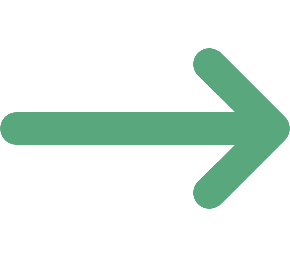

Portada
Análisis y Diseño de Sistemas II
Semana 10 — Patrones GRASP: Information Expert, Creator
Universidad de Antioquia · Ingeniería de Sistemas

Apertura
El diagrama de clases ya existe.
¿Quién hace qué?
Transición · Nueva unidad
Cierra la Unidad 4, abre la Unidad 5
Las semanas 7 a 9 dejaron un conjunto de criterios para evaluar un diseño: alta cohesión, bajo acoplamiento (semana 7) y los cinco principios SOLID (semanas 8-9). Todos responden a la pregunta "¿este diseño es bueno o malo?" una vez ya está escrito.
Hoy arranca la Unidad 5 — Patrones de Diseño y Antipatrones, que responde una pregunta distinta y anterior: ¿a qué clase le asigno esta responsabilidad, mientras estoy diseñando? El primer conjunto de guías para eso se llama GRASP.
Concepto
¿Qué es GRASP?
GRASP (General Responsibility Assignment Software Patterns) es un conjunto de guías para decidir a qué clase asignar una responsabilidad durante el diseño de detalle de un sistema orientado a objetos. Fue propuesto por Craig Larman en su libro Applying UML and Patterns.
Una responsabilidad, en diseño de clases, es una obligación de comportamiento: algo que un objeto debe hacer (un cálculo, una validación, una acción) o saber (un dato, una relación con otro objeto). Diseñar un sistema es, en gran parte, repartir responsabilidades entre clases.
Concepto · Relación con lo visto
Guías, no reglas mecánicas
GRASP no dice "la responsabilidad X siempre va en la clase Y". Da un criterio de razonamiento para decidir, caso por caso, entre varias clases candidatas. Los criterios están directamente conectados con lo que ya se vio:
- Aplicar bien GRASP tiende a producir clases con alta cohesión y bajo acoplamiento (semana 7) — no es casualidad, varios patrones GRASP se llaman exactamente así.
- Aplicar bien GRASP ayuda a cumplir SOLID (semanas 8-9): una responsabilidad bien ubicada es más fácil de mantener con una sola razón de cambio (SRP) y con dependencias limpias (DIP).
GRASP son nueve patrones en total. Esta semana se ven los dos primeros: Information Expert y Creator.
Concepto · Aclaración importante
GRASP no es lo mismo que los patrones de diseño "clásicos"
Es fácil confundir GRASP con los patrones de diseño GoF (Gang of Four: Strategy, Observer, Factory, etc.), que se ven más adelante en el curso (semanas 12-14). Son cosas distintas:
- GRASP son principios de asignación de responsabilidades: guían el razonamiento de "¿quién debería hacer esto?" en cualquier diseño de clases.
- Los patrones GoF son soluciones estructurales reusables a problemas de diseño recurrentes y específicos (ej. "cómo desacoplar la creación de un objeto de su uso").
De hecho, aplicar bien GRASP durante el diseño de detalle es lo que después hace evidente cuándo conviene introducir un patrón GoF. Por eso GRASP se ve primero.
Transición
El primer patrón: Information Expert
El patrón más usado de los nueve GRASP, y el más intuitivo una vez se entiende: la responsabilidad se asigna a la clase que ya tiene la información para cumplirla.
Concepto
Information Expert: la definición
Information Expert: asigna una responsabilidad a la clase que tiene la información necesaria para cumplirla — ya sea porque la tiene directamente (sus propios atributos) o porque tiene una referencia a otro objeto que la tiene.
La pregunta guía es siempre la misma: "¿quién sabe lo suficiente para hacer esto?" En vez de crear una clase externa que pida datos a otras (con getters) para hacer el cálculo, se busca la clase que ya está en la mejor posición para hacerlo con lo que ya conoce.
Concepto · Dominio del ejemplo
Un sistema de alquiler de vehículos
Para fijar el patrón, un dominio simple: una agencia que alquila vehículos por día.
Vehiculo: conoce su placa y sutarifaDiaria.Cliente: conoce su nombre y documento.Alquiler: representa un contrato — conoce sufechaInicio,fechaFin, y tiene una referencia alVehiculoy alClienteinvolucrados.
La responsabilidad a asignar: calcular el costo total del alquiler (días de uso × tarifa diaria del vehículo). ¿A qué clase le corresponde?
Contraejemplo
Poner el cálculo en una clase que no tiene la información
class ReporteDeCobros:
def calcularCostoTotal(self, alquiler):
dias = alquiler.getFechaFin() - alquiler.getFechaInicio()
vehiculo = alquiler.getVehiculo()
tarifa = vehiculo.getTarifaDiaria()
return dias * tarifaReporteDeCobros no tiene ni las fechas ni la tarifa: tiene que pedirlas prestadas con una cadena de getters (alquiler.getVehiculo().getTarifaDiaria()). Esto expone los atributos internos de Alquiler y Vehiculo hacia afuera y aumenta el acoplamiento entre las tres clases, en vez de reducirlo.
Concepto
La solución: Alquiler es el experto
class Alquiler:
def __init__(self, cliente, vehiculo, fechaInicio, fechaFin):
self.cliente = cliente
self.vehiculo = vehiculo
self.fechaInicio = fechaInicio
self.fechaFin = fechaFin
def calcularCostoTotal(self):
dias = self.fechaFin - self.fechaInicio
return dias * self.vehiculo.tarifaDiariaAlquiler es la experta en información: conoce directamente las fechas y tiene la referencia al Vehiculo que necesita para su tarifa. Nadie más tiene que pedirle sus datos por fuera — el cálculo vive donde vive la información.
Concepto
Qué se gana con Information Expert
- Encapsulamiento: los atributos de
AlquileryVehiculono necesitan exponerse con getters públicos solo para que otra clase calcule algo con ellos. - Bajo acoplamiento (semana 7): el cálculo depende de menos clases externas — vive en la clase que ya tenía la relación necesaria.
- Alta cohesión (semana 7):
Alquilerconcentra el comportamiento relacionado con sus propios datos, en vez de dispersarlo en clases "de servicio" genéricas comoReporteDeCobros.
Information Expert casi siempre coincide con el sentido común de "esto debería ir aquí" — pero da un criterio explícito para justificarlo cuando el diseño no es obvio.
Tensión conceptual
¿Y si la información está repartida entre varias clases?
En el ejemplo, Alquiler era experta parcial (fechas) y necesitó una referencia a Vehiculo (experta en tarifa) para completar el cálculo. Es común que ninguna clase sea experta total — Larman llama a esto "experto parcial": varias clases colaboran, cada una aportando la parte que conoce, y el cálculo final queda en quien puede alcanzar todas las partes con el menor número de referencias.
Information Expert no elimina el juicio del diseñador: cuando hay varios candidatos parciales razonables, hay que sopesarlo junto con acoplamiento y cohesión — no existe una única respuesta mecánica.

Interacción
¿Quién es la experta?
En el chat: en el mismo dominio de alquiler de vehículos, ¿a qué clase le asignarían cada responsabilidad, y por qué esa clase tiene la información?
- Verificar si un
Clientetiene alquileres activos vencidos (sin devolver a tiempo). - Calcular cuántos días lleva un
Vehiculosin ser alquilado. - Determinar si un
Alquileraplica un recargo por devolución tardía.
5 minutos · respondan en el chat con la clase y el porqué
Transición
El segundo patrón: Creator
Information Expert resuelve "¿quién hace este cálculo?". Ahora una pregunta distinta, igual de frecuente en cada diagrama de clases: ¿quién debería crear una instancia nueva de esta clase?
Concepto
Creator: cuatro criterios para decidir quién crea
Creator asigna a la clase B la responsabilidad de crear una instancia de la clase A si se cumple al menos uno de estos criterios:
- B contiene o agrega objetos A (relación todo-parte).
- B registra instancias de A (guarda un histórico o control de ellas).
- B usa íntimamente a A (las dos colaboran de forma cercana y constante).
- B tiene los datos de inicialización que A necesita para crearse (B se los pasaría en el constructor de todos modos).
Mientras más de estos criterios cumpla una clase candidata, más fuerte es la razón para que sea ella la que cree la instancia.
Concepto
Ejemplo: ¿quién crea un Extra?
Al dominio se agrega Extra: un servicio adicional contratado dentro de un alquiler (seguro, GPS, silla infantil), con su propio costo.
class Extra:
def __init__(self, descripcion, costo):
self.descripcion = descripcion
self.costo = costo
class Alquiler:
def __init__(self, cliente, vehiculo, fechaInicio, fechaFin):
# ... atributos previos ...
self.extras = []
def agregarExtra(self, descripcion, costo):
nuevoExtra = Extra(descripcion, costo) # Alquiler crea el Extra
self.extras.append(nuevoExtra)Alquiler cumple dos criterios de Creator a la vez: contiene/agrega los Extra (los guarda en self.extras) y tiene los datos de inicialización necesarios para crear cada uno dentro de ese alquiler.
Contraejemplo
Crear el objeto en una clase sin relación con él
class Cliente:
def solicitarExtraPara(self, alquiler, descripcion, costo):
nuevoExtra = Extra(descripcion, costo) # Cliente crea el Extra
alquiler.extras.append(nuevoExtra) # y lo empuja "de afuera"Cliente no contiene los Extra, no los registra, no los usa íntimamente, y no tiene por sí mismo los datos que definen un alquiler específico — solo los recibe de paso como parámetro. Ninguno de los cuatro criterios de Creator se cumple en Cliente. El resultado: Cliente termina conociendo y manipulando el atributo interno extras de Alquiler desde afuera, subiendo el acoplamiento sin necesidad.
Concepto
Creator y bajo acoplamiento
Cuando la clase creadora ya tiene una relación estructural con la clase creada (la contiene, la usa íntimamente o ya tiene sus datos), no se agrega ninguna dependencia nueva al crearla — la relación ya existía en el diseño. Es la opción de menor acoplamiento posible para esa creación.
En cambio, hacer que una clase externa sin relación previa (como Cliente en el contraejemplo) cree y manipule el objeto agrega un vínculo nuevo entre dos clases que no lo necesitaban, y expone estructura interna que debería quedar encapsulada.
Interacción
¿Quién debería crear cada objeto?
En el chat, usando los cuatro criterios de Creator, para cada caso indiquen qué clase debería crear la instancia y cuál(es) criterio(s) cumple:
- Un
Pagoque salda el costo total de unAlquilerya cerrado. - Un nuevo
Vehiculoque la agencia acaba de comprar e incorpora a su flota (claseFlotaque administra todos los vehículos disponibles).
5 minutos · respondan en el chat con la clase y el criterio
Síntesis
Information Expert y Creator, en una frase
- GRASP: guías de Larman para asignar responsabilidades durante el diseño, no soluciones estructurales como los patrones GoF.
- Information Expert: la responsabilidad va a la clase que tiene (directa o indirectamente) la información para cumplirla.
- Creator: la clase que contiene/agrega, registra, usa íntimamente o tiene los datos de inicialización de otra es quien debería crear sus instancias.
- Ambos patrones, bien aplicados, refuerzan lo ya conocido: alta cohesión, bajo acoplamiento y SOLID.

Cierre
La próxima sesión: tres patrones GRASP más
El miércoles se ven los siguientes tres patrones GRASP: Controller (quién recibe y coordina un evento de entrada al sistema), Low Coupling y High Cohesion — las versiones formalizadas de los criterios de calidad que ya se conocen desde la semana 7, ahora como guías explícitas de asignación de responsabilidades.
